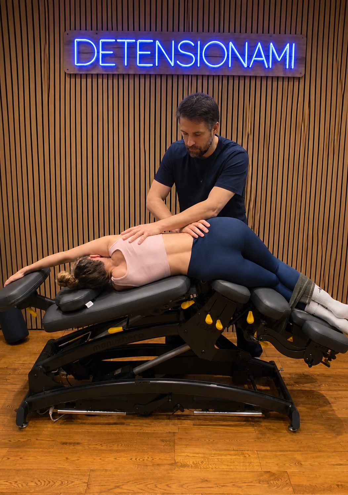
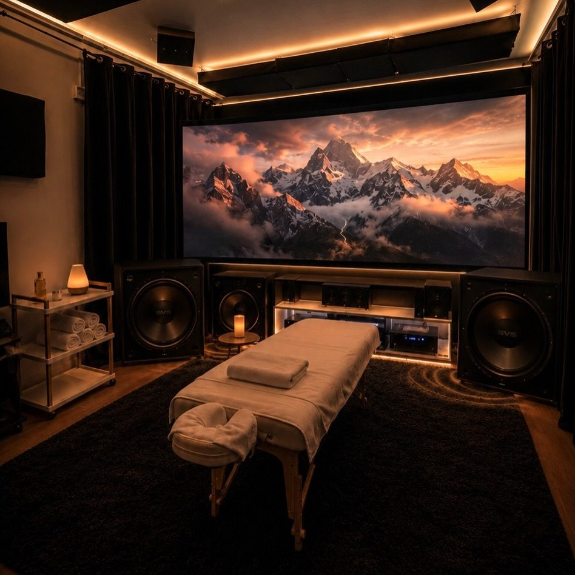
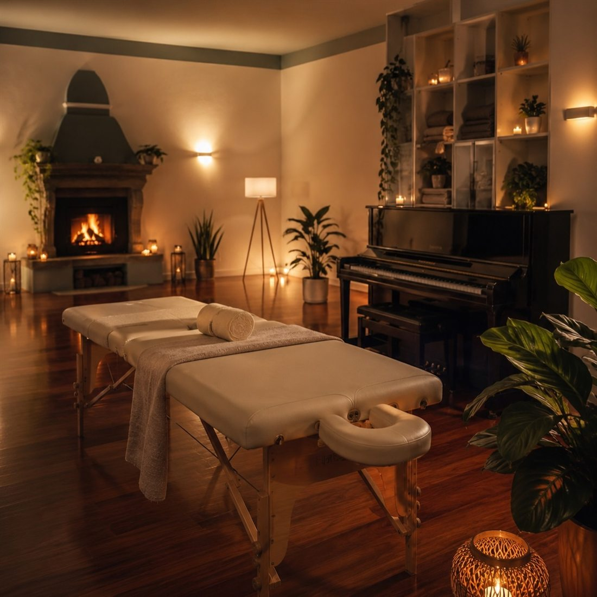
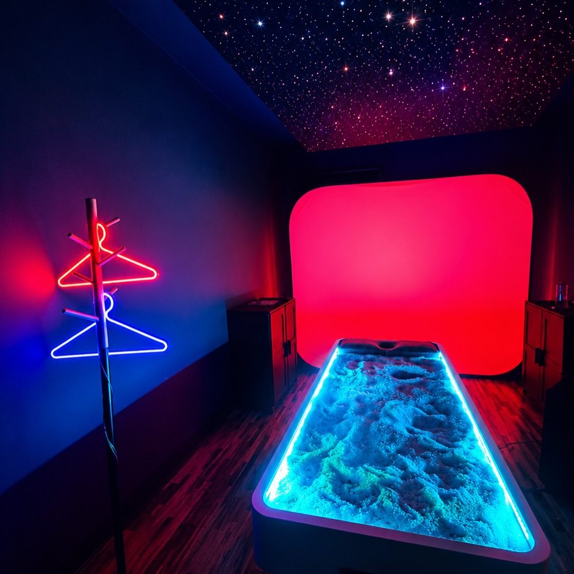
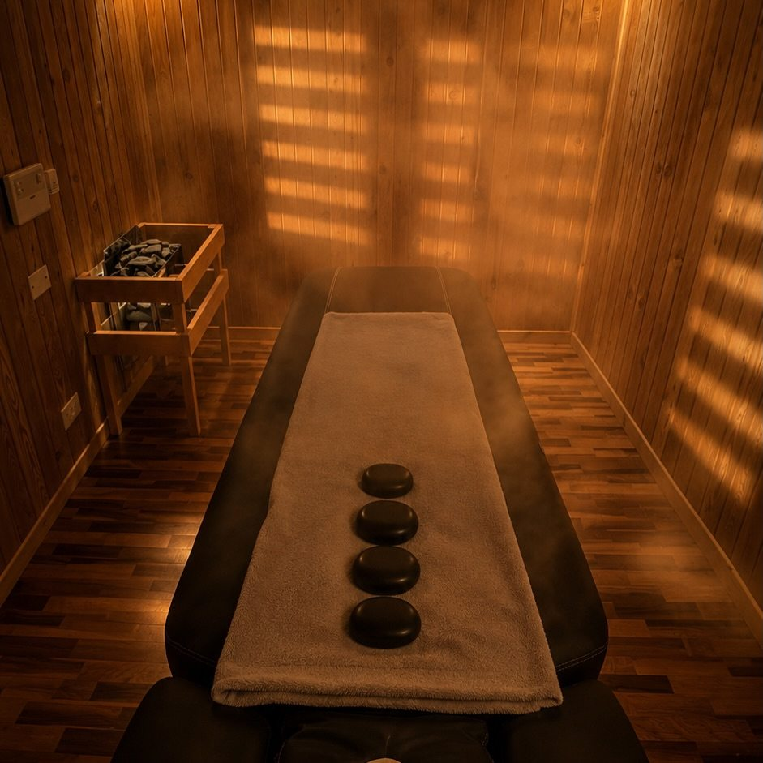
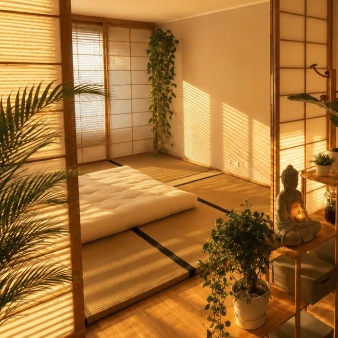
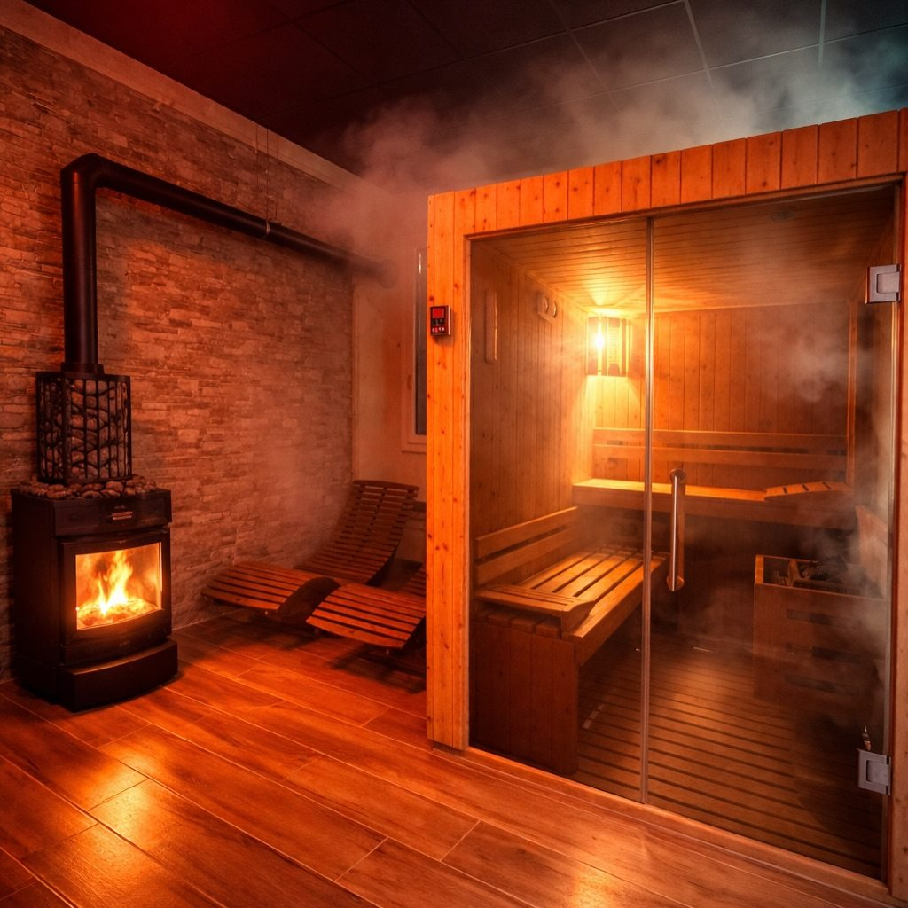
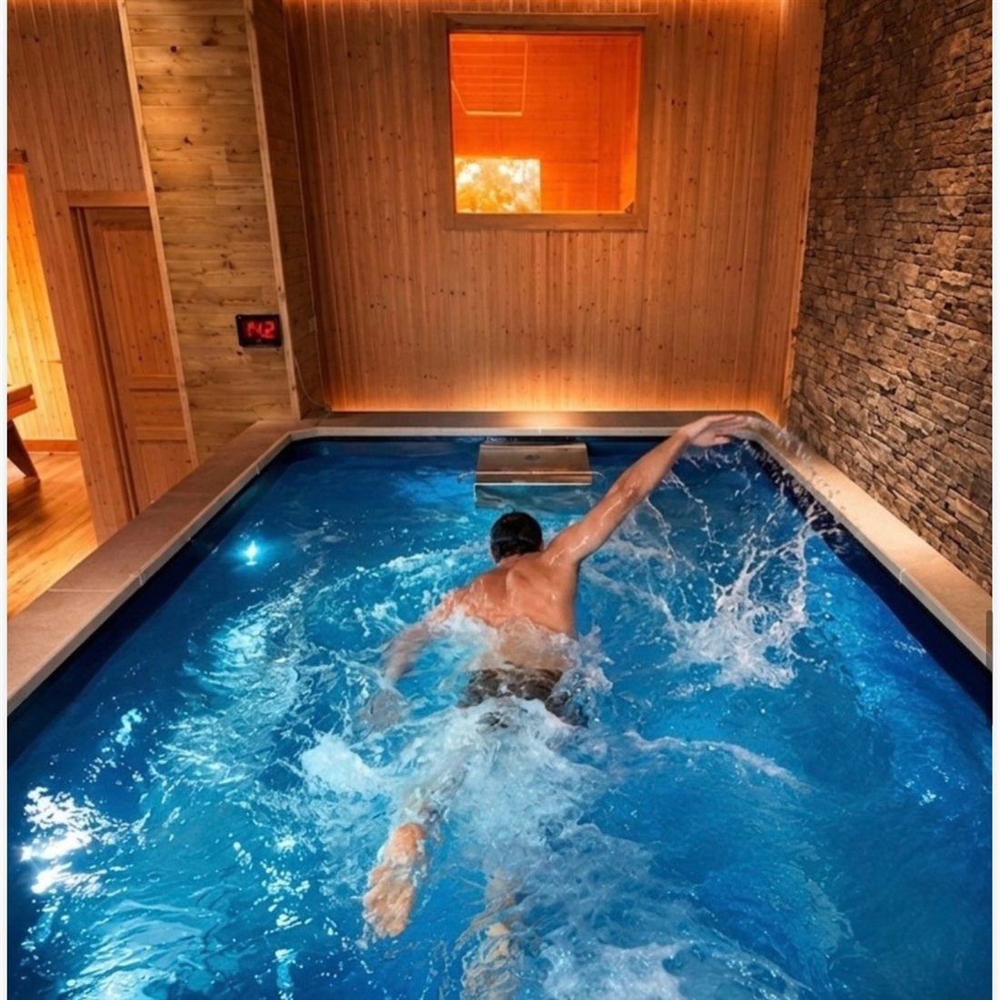

Le 8 sale / Sala 06 di 08 / Studio 1
Un tavolo che si inclina, si curva e si articola.
Sala Fisioterapia · Manuthera 242 · decontratturante profondo · Theragun · a valutazione
Il Manuthera 242, tra i tavoli più sofisticati al mondo per il lavoro manuale. La sala tecnica dello studio: decontratturanti profondi, lavoro posturale, Theragun, coppette e pietre calde. Qui lavoro come massofisioterapista.
Perché esiste
Per lavorare in profondità serve la posizione giusta, non più forza.
Una contrattura profonda non si vince spingendo di più. Si vince mettendo il corpo nella posizione in cui quel muscolo è accessibile e può allungarsi: un'anca aperta, una colonna leggermente inclinata, una trazione delicata sul collo.
Su un lettino piatto questo lo fai con cuscini e compromessi. Volevo un tavolo che accompagnasse il corpo nelle posizioni che amplificano il lavoro manuale, e che permettesse mobilizzazioni segmentali precise.
La Sala Fisioterapia è la stanza tecnica dello studio: meno atmosfera, più strumenti. È dove lavoro come massofisioterapista, con qualifica sanitaria.
Com'è stata progettata
Un tavolo finlandese che si muove in tre dimensioni.
Il Manuthera 242 è costruito da Lojer, in Finlandia, per il lavoro manuale avanzato. Ha tre sezioni, testa, torace e bacino, che si muovono in modo indipendente: flessione, inclinazione laterale, rotazione e trazione, con due motori sincronizzati che regolano altezza e inclinazione mentre lavoro.
Attorno al tavolo gli strumenti di precisione: il Theragun per il massaggio sportivo a percussione, le coppette, le pietre calde, il taping elastico, gli attrezzi della maderoterapia. Si inseriscono nel trattamento su valutazione, per amplificare l'azione decontratturante o drenante.
La stanza è luminosa ed essenziale, con la scritta al neon Detensionami sulla parete di legno. È progettata per vedere e lavorare, non per sognare.
La dotazione
- Tavolo Lojer Manuthera 242, tre sezioni articolate, due motori sincronizzati
- Movimenti Flessione, inclinazione laterale, rotazione, trazione cervicale e lombare
- Strumenti Theragun, coppettazione, hot stones, taping elastico, maderoterapia
- Trattamenti Decontratturante, sportivo, posturale, massoterapia
- Durate 40 minuti per il Theragun localizzato, 60–90 per il lavoro completo
- Chi lavora Massofisioterapista, Elenco Speciale TSRM-PSTRP
Cosa succede nella seduta
Un'ora in Sala Fisioterapia, passo per passo.
Dove e perché
Guardiamo insieme dove fa male e perché: postura, movimenti, equilibrio destra-sinistra dall'InBody.
Il tavolo si regola su di te
Altezza, inclinazione, apertura. Calore sulla zona, se serve.
Mano ferma e profonda
Digitopressione, gomito e avambraccio sulle parti contratte, trazioni e mobilizzazioni con il tavolo che si muove. Theragun dove serve andare più a fondo.
Due indicazioni per casa
Stretching passivo, eventuale taping, e cosa fare da qui alla prossima volta.
I vantaggi
Quello che questa sala aggiunge alle mani.
La posizione fa metà del lavoro
Con il tavolo che apre e inclina, raggiungo muscoli che su un piano piatto restano protetti.
Profondo senza violenza
Il lavoro è lento e percettivo: le fasce si separano, le articolazioni trovano spazio. Non lascia lividi.
Strumenti al posto giusto
Theragun, coppette e pietre calde non sono extra: entrano quando il muscolo lo chiede.
Cervicale, lombare, articolazioni
È la sala per i problemi che hanno un nome e un punto preciso.
Per chi fa sport
Carichi alti, contratture localizzate, recupero: il massaggio sportivo a percussione in 40 minuti.
Per chi è
La stanza si sceglie insieme, seduta per seduta.
Nessuna sala è giusta per tutti. Queste sono le indicazioni che do di solito; il resto lo decidono i numeri dell'InBody e una chiacchierata.
È la sala giusta per
- Chi ha una contrattura precisa, cervicale o lombare, che non passa
- Chi fa sport con carichi alti
- Chi lavora seduto e ha la postura che lo dimostra
- Chi vuole un trattamento tecnico, senza atmosfere
Meglio un'altra sala se
- Chi cerca il rilassamento profondo: qui si lavora, e la mente resta sveglia
- Chi vuole il drenante: Biosauna o Sala Emozionale
- Chi ha diagnosi acute o interventi recenti: prima il parere del medico. Qui non si fanno manipolazioni vertebrali
Perché non la trovi altrove
Uno dei tavoli più sofisticati al mondo, in uno studio di massaggio.
Il Manuthera 242 si trova negli studi di terapia manuale, non nelle spa. Qui sta a pochi metri dalla biosauna e dalla sala emozionale: è il motivo per cui lo stesso percorso può passare da un lavoro tecnico a uno drenante senza cambiare studio.
Prima di prenotare
Quello che di solito mi chiedono su questa sala
Fa male?
È un lavoro profondo, quindi si sente. Ma non è violento e non lascia segni: lento e percettivo, dentro la tua soglia.
Fate manipolazioni vertebrali?
No. Non faccio manipolazioni e non le consiglio. Il tavolo serve per mobilizzare, allungare e raggiungere i muscoli, non per far scrocchiare.
Serve una prescrizione?
No, ma per problemi acuti o dopo un intervento voglio il parere del tuo medico prima di lavorare.
Quanto dura?
Il Theragun localizzato 40 minuti. Il lavoro completo 60 o 90, a valutazione.
Le otto sale
Otto sale. Un solo massaggio: il tuo.

Sala Cinema
Sala 01 · Studio 1

Sala del Pianoforte
Sala 02 · Al piano di sopra

Sala Emozionale
Sala 03 · Studio 1

Sala Biosauna
Sala 04 · Studio 1

Sala Asiatica
Sala 05 · Studio 1
Sala Fisioterapia
Sala 06 · Studio 1

Sauna Harvia
Sala 07 · Studio 2

Endless Pool
Sala 08 · Studio 2
Il passo successivo
Scrivimi: scegliamo insieme se è la sala giusta.
Due righe su WhatsApp con quello che cerchi. Ti rispondo io e, se vuoi, fissiamo la prima analisi InBody.
334 79 18 516